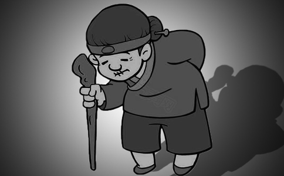

好久没写东西了，很多真实的因果故事在心中压抑了很久。
今天就给大家讲一个发生在我身边的真实而可悲的因果故事。
记得我刚搬到北京某个村住（不是画家村），老远看到一个动物在摇摇晃晃的缓慢爬行，吓我一跳，就在我刚租的院子附近，我再仔细一看，原来是隔壁邻居家的一个老太太，她弯腰驼背近90度，几乎已经和四脚动物，就是爬行动物快一样了，她走路非常的吃力，看见我，就勉强歪着头，上半身还是与地面平行，“啊，啊”很想和我说话，却特别的费劲，她说不完整就嘿嘿的笑，她脸上的气质显示出她曾经是个刻薄，爱使坏心眼的人，善良的人面相一看就是慈眉善目的。看她样子也就50多岁。可一张嘴，牙都快掉光了，还好她的手倒是没有当脚使。如果是在晚上，只看她走路的身影，真的以为是哪来的怪兽。我当时的直觉就是这老太太一定做了很严重的坏事，才落得现在这个毛病。
虽然是邻居，可我对她印象不好，从没敢进过她家门，倒是我别的朋友因为去她家借东西，进她院子去过，后来朋友和我说，这家人对老人很不好，就是这个像怪兽的老太太，她上面还有年迈的公公婆婆。她家房子很多，看上去经济条件也不错，听老太太的爱人说他亲哥哥还是这村里的书记，条件都很好，都住的是好房子。结果我的朋友进她家院子，无意中看到老太太的公公婆婆却住在一间几平米的厢房里，一张大床几乎占了大半的空间，条件非常简陋，两位老人都80多了，屋里即不见阳光，也只有一个不太保暖的土炉子，屋里又阴又冷的。可怜的老人就披着被子在床上蜷缩着。而那已经很像怪兽的老太太全家却住在有暖气，宽敞明亮，装修不错的有大客厅，大卧室的正屋里。
一次，我无意中和老太太的爱人聊天，其实也是想让他们
我还从别的邻居口中得知这个老太太没病之前，几乎天天都骂公公婆婆，更多不孝的细节就不太清楚了。后来突然老太太的腰就直不起来了，说话不清楚了，人也变的很傻了。而且她自己的儿媳妇也几乎是天天骂她。因缘果报就像回力球又弹回到她自己身上了。
正如《
的罪报惩罚“尔时
唐代王中书《劝孝歌》说：“乌鸦尚反哺，羔羊犹跪脚，人为万物灵，何反不如物？”
做为万物之灵的人类，我们怎么还能不如动物
？钱虽然很重要，衣食住行都离不开钱，但是我们不能因为钱而将
最后送给大家一首《百孝篇》：
天地重孝孝当先
一个孝字全家安
父母生子原为孝
能孝就是好儿男
孝顺子弟必明贤
为人能把父母孝
下辈孝儿照样还
贤人尽孝积
生意兴隆就在孝
没有
自古忠臣多孝子
君选贤臣举孝廉
孝字当头全家乐
孝字治国万民安
若问如何把亲孝
孝亲常问寒和暖
五谷丰登皆因孝
孝字就是太平年
不尽孝道亲
尽孝亲人无怨言
行孝不在穷和富
量力尽孝孝不难
可怜世人不知孝
不知孝能感动天
富孝荣华来供养
贫孝饮水亦承欢
福禄皆由孝字得
天对孝子另眼看
兄弟和睦就为孝
行孝别说亲心偏
孝子虽贫终能好
不孝虽富不平安
孝遇难处见真孝
孝心不容一时耽
诸事不顺因不孝
回心转孝金不换
快行孝来赶紧孝
亲由我孝寿为天
孝道终归为天理
孝顺不分男和女
生前尽孝亲心悦
死后再孝子孙寒
孝顺父母如敬天
戒淫戒赌都是孝
时刻行孝亲心宽
孝男尽孝无灾难
孝妇尽孝无抱怨
戒杀
父母延寿孝君先
翁婆身上能尽孝
美名流芳其孝贤
济贫施舍都是孝
能得福报孝非凡
女得淑名先学孝
三从四德孝为先
真心行孝是真孝
处事都在孝里边
孝在街坊人敬仰
孝在家中家合欢
不孝不善为祸水
福海行舟小为帆
孝子逢人就劝孝
孝化风俗人品端
孝子行孝吉神护
不孝做事恶捣乱
万事唯有孝字大
孝字确是百行源
此篇句句不离孝
离孝人伦难周全
孝父孝母孝祖先
念得百遍千个孝
消灾免难百孝篇